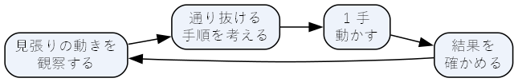
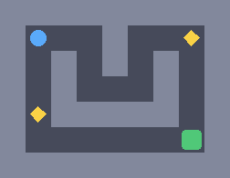
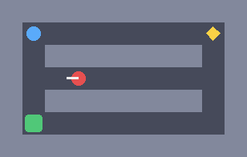
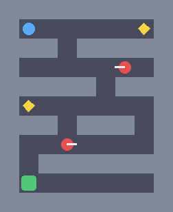
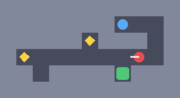

12. 総合演習
この章では、これまでに学んだ考え方を使って、小さなパズルゲーム『宝石と見張り』を設計する過程を一通りたどる。体験の目標を決め、ルールを作り、レベルを設計し、プログラムで検証し、プレイテストの準備をする、という順に進める。サンプル一式は final_project.zip からダウンロードできる。
12.1. 題材のゲーム
『宝石と見張り』は、マス目の上でプレイヤーを 1 マスずつ動かし、見張りに捕まらないように宝石をすべて集めて出口から脱出する、ターン制のパズルゲームである。
12.2. 体験の目標を決める
設計の最初に、プレイヤーにどのような体験をしてほしいかを決める。第 3 章の 8 種類の楽しさのうち、このゲームでは次の 2 つを重視する。
挑戦：見張りの動きを先読みし、隙を突いて通り抜ける。
発見：見張りをやり過ごす新しい方法に、自分で気付く。
この目標から、操作の正確さや反応の速さではなく、観察と先読みで解くゲームにする、という方針が決まる。
12.3. ルールを作る
方針に沿って、次のルールを決めた。
項目 |
ルール |
|---|---|
目的 |
宝石をすべて集めてから出口に入るとクリアである。宝石が残っているあいだ、出口はただの床として扱う |
プレイヤーの行動 |
1 ターンに上下左右へ 1 マス動くか、その場で待つ。壁へは動けない（ターンも進まない） |
見張りの行動 |
プレイヤーが動いた後、全員が 1 マス進む。進む先が壁なら向きを反転して 1 マス進む。反転した先も壁ならその場にとどまる |
失敗 |
見張りのいるマスに入るか、見張りが自分のいるマスに来ると捕まる |
補助 |
1 手戻す、レベルを最初からやり直す、ができる |
コアループは次のようになる。

図 12.1 『宝石と見張り』のコアループ
12.3.1. 設計の判断
ルールを決める過程では、いくつかの判断をした。それぞれの判断と、根拠になった考え方を次の表にまとめる。
判断 |
根拠 |
|---|---|
リアルタイムではなくターン制にする |
体験の目標は先読みであり、反応の速さではない。ターン制なら、プレイヤーは好きなだけ考えられる（第 6 章の難しさの種類） |
見張りの動きに乱数を使わない |
動きが予測できれば、捕まったときに原因が分かり、失敗を公平だと感じられる（第 6 章）。さらに、レベルが解けるかどうかをプログラムで検証できる |
見張りが次に進む向きを表示する |
判断に必要な情報を、判断が必要なときに見せる（第 7 章の UI） |
1 手戻せるようにする |
失敗のペナルティを軽くし、試行錯誤しやすくする（第 6 章） |
最短手数を表示する |
クリアした後も、より短い手順を探すという目標を与える。第 3 章のアチーバーのタイプのプレイヤーに応える |
12.3.2. MDA で整理する
できたルールを、第 2 章の MDA で整理しておく。
層 |
内容 |
|---|---|
メカニクス |
マス目の移動、待機、往復する見張り、宝石と出口、1 手戻す機能 |
ダイナミクス（想定） |
見張りの通り道の手前で待つ。見張りの往復の周期を数える。くぼみに隠れて見張りをやり過ごす |
エステティクス（目標） |
先読みが当たったときの手応え（挑戦）、隠れるという方法に気付いたときの驚き（発見） |
ダイナミクスとエステティクスは、あくまでデザイナーの想定と目標である。実際にそうなるかは、プレイテストで確かめる。
12.4. 実装の構成
サンプルは次のファイルで構成されている。
ファイル |
内容 |
|---|---|
|
ルール（画面表示を含まない部分）。レベルの読み込みと、1 手進める処理 |
|
幅優先探索でレベルを解き、最短手数を求める |
|
pygame-ce による画面表示と操作。遊んだ記録を |
|
レベルのテキストファイル。ファイル名の順に遊ぶ |
ルールを画面表示から切り離して game_logic.py にまとめたことで、同じルールを、人が遊ぶ main.py と、レベルを検証する solver.py の両方から使える。ルールを変えたときに、検証の側だけ古いルールのまま、ということが起きない。
1 手進める処理は リスト 12.1 のとおりである。盤面を表す State は変更できない値として扱い、1 手ごとに新しい State を作る。こうすると、1 手戻す機能は過去の State をリストに積んでおくだけで実現できる。
133 def step(self, state: State, move: Pos) -> State | None:
134 """1 手進めた盤面を返す。壁に向かって動こうとした場合は None を返す。"""
135 if state.status is not Status.PLAYING:
136 return None
137 target = add(state.player, move)
138 if self.is_wall(target):
139 return None
140
141 gems = state.gems - {target}
142 turn = state.turn + 1
143 if any(g.pos == target for g in state.guards):
144 return replace(state, player=target, turn=turn, status=Status.CAUGHT)
145 if target == self.exit and not gems:
146 return replace(state, player=target, gems=gems, turn=turn, status=Status.CLEARED)
147
148 guards = tuple(self.move_guard(g) for g in state.guards)
149 caught = any(g.pos == target for g in guards)
150 return State(target, gems, guards, turn, Status.CAUGHT if caught else Status.PLAYING)
124 def move_guard(self, guard: Guard) -> Guard:
125 """見張りを 1 マス進める。前が壁なら反転し、反転した先も壁なら動かない。"""
126 ahead = add(guard.pos, guard.direction)
127 if not self.is_wall(ahead):
128 return Guard(ahead, guard.direction)
129 back = (-guard.direction[0], -guard.direction[1])
130 behind = add(guard.pos, back)
131 return Guard(guard.pos if self.is_wall(behind) else behind, back)
遊ぶには、final_project フォルダーで main.py を実行する。
1cd final_project
2python main.py
矢印キー（または WASD）で移動、Space で待つ、Z で 1 手戻す、R でやり直し、Esc で終了である。クリアすると Enter で次のレベルに進む。
12.5. レベルを設計する
レベルは、次の文字で表したテキストファイルで定義する。先頭が ; の行には、レベルの名前とヒントを書く。
文字 |
意味 |
|---|---|
|
壁 |
|
床 |
|
プレイヤーのスタート位置 |
|
宝石 |
|
出口 |
|
見張り（文字が最初に進む向きを表す） |
レベルは 4 つ用意した。レベル 1 で基本のルールを導入し、レベル 2 から 4 で見張りという要素を段階的に見せる。見張りに注目して第 9 章の 4 つの段階に当てはめると、レベル 2 が導入（起）、レベル 3 が練習（承）、レベル 4 が応用（転）に当たる。結び（結）に当たるレベルは、発展課題として読者に任せる。
12.5.1. レベル 1：はじめの一歩
1; name: はじめの一歩
2; hint: 宝石をすべて集めてから出口に入ろう
3#########
4#@..#..*#
5#.#.#.#.#
6#.#...#.#
7#*#####.#
8#......E#
9#########

図 12.2 レベル 1：はじめの一歩（青がプレイヤー、黄が宝石、緑が出口。以降の図の赤は見張りで、白い線は次に進む向き）
見張りのいないレベルで、移動、宝石、出口という基本のルールを導入する。2 つの宝石は離れた場所にあり、右上の宝石を先に取って下へ進むと、もう 1 つの宝石を取る前に出口を通ることになる。このとき出口は開いていないので、「宝石をすべて集めないと出口は使えない」ことを、失敗の危険が無い状況で体験できる。
12.5.2. レベル 2：見張りの通り道
1; name: 見張りの通り道
2; hint: 見張りが通り過ぎるのを待ってから渡ろう（Space で待機）
3###########
4#@.......*#
5#.#######.#
6#..<......#
7#.#######.#
8#E........#
9###########

図 12.3 レベル 2：見張りの通り道
見張りを導入するレベルである。見張りは中央の横の通路を往復しており、右上の宝石を取った後、この通路を横切らなければ出口に行けない。宝石のすぐ下のマスは見張りの通り道に面しているが、見張りが入ってくることはないので、ここで安全に見張りの動きを観察できる。見張りを気にせずにまっすぐ進むと、10 手目に通路で捕まる。捕まっても 1 手戻せば、どのタイミングで渡ればよいかをすぐに試し直せる。
12.5.3. レベル 3：二つの通り道
1; name: 二つの通り道
2; hint: 見張りは 2 人。どこで待つかを考えよう
3#########
4#@.....*#
5###.#####
6#.....<.#
7#####.###
8#*......#
9###.###.#
10#..>....#
11#.#######
12#E......#
13#########

図 12.4 レベル 3：二つの通り道
見張りを 2 人にし、見張りの通り道を通り抜ける操作を練習させるレベルである。宝石を集めて出口に向かうには、2 本の通り道を順に通らなければならない。どちらの通り道でも、通路に沿って数マス歩く必要があるので、レベル 2 のように横切るだけでは済まない。2 人の見張りは動く位置がずれているので、1 本目を安全に抜けられるタイミングで進んでも、そのまま進むと 2 本目で捕まることがある。2 本の通り道を通して手順を考える必要がある。
12.5.4. レベル 4：すれ違い
1; name: すれ違い
2; hint: 通路のくぼみに入れば、見張りをやり過ごせる
3###########
4#######@..#
5#####*###.#
6#*......<.#
7##.####E###
8###########

図 12.5 レベル 4：すれ違い
これまでのレベルでは、見張りの通り道は「横切るもの」だった。このレベルでは、宝石の 1 つが通り道の行き止まりにあり、もう 1 つの宝石と出口も通り道に面している。プレイヤーは通り道の中を歩かなければならない。通り道には上下に小さなくぼみがあり、そこに入れば見張りをやり過ごせる。「見張りと同じ通路にいても、くぼみに隠れれば捕まらない」という、見張りの新しい扱い方に気付かせる、第 9 章の応用（転）に当たるレベルである。
12.6. ソルバーで検証する
レベルを作ったら、解けることを確かめる。人が遊んで確かめるのは時間がかかるうえ、作った本人は正解を知っているので、見落としが起きやすい。そこで、第 9 章の鍵と扉の検証と同じように、プログラムで検証する。
このゲームでは見張りの動きに乱数を使わないので、盤面（プレイヤーの位置、残りの宝石、見張りの位置と向き）が決まれば、その先の展開も決まる。そこで、盤面を頂点、1 手を辺とするグラフを幅優先探索すれば、最短の手順が求められる。幅優先探索では、手数の少ない盤面から順に調べるので、最初に見つかったクリアの手順が最短手順になる。
39def solve(level: Level) -> Solution:
40 start = level.initial
41 parents: dict[Key, tuple[Key, Pos] | None] = {key_of(start): None}
42 queue = deque([start])
43 while queue:
44 state = queue.popleft()
45 for move in SEARCH_ORDER:
46 nxt = level.step(state, move)
47 if nxt is None or nxt.status is Status.CAUGHT:
48 continue
49 key = key_of(nxt)
50 if key in parents:
51 continue
52 parents[key] = (key_of(state), move)
53 if nxt.status is Status.CLEARED:
54 return Solution(reconstruct(parents, key), len(parents))
55 queue.append(nxt)
56 return Solution(None, len(parents))
parents には、各盤面にどの盤面からどの手で来たかを記録している。クリアの盤面が見つかったら、parents をたどって手順を復元する。同じ盤面を 2 回調べないようにしているので、盤面の種類が有限であれば、探索は必ず終わる。
solver.py を実行すると、levels フォルダーのすべてのレベルを解く。
1python solver.py
1はじめの一歩: 最短 18 手（待機 0 回、調べた盤面 58）
2 ↓↓↓↓→→→→→→↑↑↑↑↓↓↓↓
3見張りの通り道: 最短 22 手（待機 2 回、調べた盤面 601）
4 ・・→→→→→→→→↓↓↓↓←←←←←←←←
5二つの通り道: 最短 33 手（待機 5 回、調べた盤面 1099）
6 ・・・・・→→→→→→←←←←↓↓→→↓↓←←←←→→↓↓←←↓↓
7すれ違い: 最短 32 手（待機 9 回、調べた盤面 483）
8 ・・→→↓↓←←←←↑・・・・↓←←←←→↓・・・↑→→→→→↓
・ はその場で待つ手を表す。ソルバーは待つ手を最初に試すので、同じ手数の手順が複数あるときは、待つ手をできるだけ早い段階に置いた手順が表示される。そのため、例えばレベル 2 では、宝石の下のマスではなくスタート地点で 2 回待つ手順になっている。
12.6.1. 検証の結果をレベルの設計に生かす
ソルバーの結果は、解けるかどうかだけでなく、レベルの性質を数値で示してくれる。見張りを取り除いたレベルの最短手数と比べると、見張りがどれだけ遠回りや待機を強いているかが分かる。
レベル |
見張りなし |
見張りあり |
見張りによる増加 |
|---|---|---|---|
1：はじめの一歩 |
18 手 |
18 手 |
0 手 |
2：見張りの通り道 |
20 手 |
22 手 |
2 手 |
3：二つの通り道 |
28 手 |
33 手 |
5 手 |
4：すれ違い |
21 手 |
32 手 |
11 手 |
見張りによる増加の手数は、レベルが進むにつれて大きくなっており、第 6 章で述べたように難易度が上がっていくことが数値でも確かめられる。また、見張りを無視した最短経路をそのまま進むと、レベル 2 から 4 ではいずれも途中で捕まる。つまり、どのレベルでも見張りの動きを考えなければクリアできない。
レベル 3 を作る過程では、2 人の見張りの初期位置と向きのすべての組み合わせをソルバーで調べた。組み合わせによっては、見張りがいても最短手数が増えない（見張りが邪魔にならない）配置や、待ち時間が長すぎて退屈な配置があった。その中から、2 人の見張りがどちらも手順に影響し、待ち時間が長すぎない配置を選んだ。このように、ソルバーはレベルを検証するだけでなく、設計を探索する道具にもなる。
ただし、最短手数や待機の回数は、プレイヤーが感じる難しさそのものではない。プレイヤーが解法に気付けるかどうかは、手数だけでは分からない。数値は設計の目安として使い、最終的な判断はプレイテストで行う。
12.7. プレイテストの準備
main.py は、遊んだ記録を playlog.csv に追記する。列は第 11 章の playtest_heatmap.py と同じ形式である。
1session,level,x,y,event
21792889840,はじめの一歩,1,2,move
31792889840,はじめの一歩,1,3,move
event には、移動（move）、待機（wait）、捕まった（caught）、クリア（clear）、1 手戻した（undo）、やり直した（restart）が記録される。数人に遊んでもらった後、zip を展開したフォルダーで次のように実行すると、レベル 3 でプレイヤーが捕まった位置をヒートマップにできる。--grid を指定すると、座標をマスの番号とみなし、1 マスを 1 区画として描く。
1python playtest_heatmap.py --input final_project/playlog.csv --event caught --level 二つの通り道 --grid
第 11 章で述べたように、ログは問題が起きている場所を教えてくれる。特定のマスで多くのプレイヤーが捕まっていれば、その場所で見張りの動きが読みにくいのかもしれない。「1 手戻した」が多い場所は、プレイヤーが試行錯誤している場所である。試行錯誤は悪いことではないが、あまりに多ければ手がかりが足りない可能性がある。ログで場所の見当を付けたら、その場所でのプレイヤーの様子を観察して原因を探る。
12.8. 発展課題
第 9 章の結び（結）に当たるレベル 5 を作れ。これまでに学んだことをすべて使い、達成感とともにゲームを終えられるレベルにすること。作ったら
solver.pyで解けることを確かめよ。見張りに「視界」を加えよ。見張りの正面の 2 マス以内にプレイヤーが入ったら捕まる、というルールにした場合、既存のレベルの最短手数がどう変わるかを
solver.pyで調べよ。新しいメカニクスを 1 つ追加せよ。例えば、押して動かせる箱（見張りの通り道をふさげる）、色付きの鍵と扉などが考えられる。追加したメカニクスについて、第 9 章の 4 つの段階に従ったレベルを作れ。
第 10 章の手続き型生成でレベルを自動生成し、
solver.pyで解けるものだけを残す仕組みを作れ。最短手数や待機の回数を指標にして、難易度の異なるレベルを選び出せるかを試せ。友人にレベル 1 から 4 を遊んでもらい、ログと観察から問題を 1 つ見つけて改善せよ。